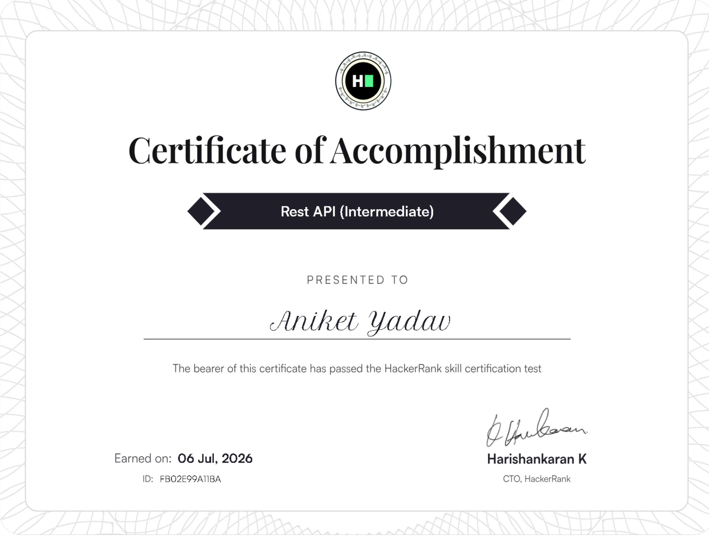

Certificate
Python Course
Kaggle Learn
HELLO I'M
A passionate Data Scientist & AI-Driven Engineer
Forward-thinking Data Science professional currently completing my final year of B.Tech at BBD. I specialize in leveraging Artificial Intelligence and Machine Learning to drive innovation and organizational impact. With a technical portfolio encompassing AI-driven credit risk evaluation systems and intelligent career platforms, I bring a holistic approach to problem-solving.
Refining Credo-fin's risk-scoring pipeline and experimenting with retrieval-augmented pipelines for more explainable AI decisions.
Deepening my knowledge of distributed backend systems, vector databases, and advanced prompt engineering workflows.
Internships and entry-level roles in Data Science, AI Engineering, or Backend Development where I can ship real, production-grade systems.
WHAT I DO
Building intelligent systems — from credit-risk models to LLM-powered RAG pipelines that solve real problems.
Designing reliable, production-ready backend systems with clean APIs, auth, and scalable data layers.
Workflow automation and conversational tools that cut manual effort and streamline everyday tasks.
Turning raw data into usable insight — from analysis to fully deployed, user-facing applications.
WHO I AM
I build systems that work — fast, reliable, and intelligently scalable.
Specializing in Data Analysis, workflow automation, and custom AI integrations. Also with working knowledge of full-stack development, I bridge traditional computing structures with dynamic models like LLMs and RAG pipelines to build maintainable applications designed for real-world reliability.
2023 – Present
Currently pursuing a Bachelor of Technology (B.Tech) in Computer Science & Engineering. Actively specializing in practical application of machine learning architectures and backend robustness under mentorship.
2020 – 2022
Completed higher secondary education at this institution.
2018 – 2020
Completed secondary education at this institution.
PORTFOLIO
5 projects - Tap to explore
Projects Built
GitHub Repos
Certifications
Technologies Stacked
EXPERTISE
Interactive Topology · Drag to rotate Sphere, or toggle bottom-right button for Flat Grid Mode.
ACHIEVEMENTS
6 verified achievements and certificates
Kaggle Learn

Lets Upgrade

HackerRank
HackerRank

Simplilearn SkillUp

BBDNIIT Participation
OPEN SOURCE DEVELOPER
CONTACT - WORKFLOW - IDENTITY
I'm always open to interesting projects, collaborations, or just a good conversation about tech.
SITE - EMAIL - SMS
Looking for a performant custom API interface, custom automation system workflows, or LLM agents? Let's discuss requirements directly.